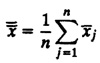
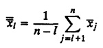
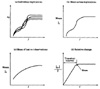
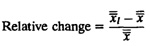
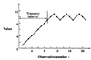
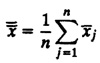
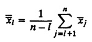
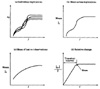
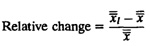

){kind=link}
){kind=link}

Figure 25.8a shows the trajectories of several replications, and an average trajectory is shown in Figure 25.8b.

Set l = 1 and proceed to the next step.


FIGURE 25.8 Initial data deletion method.
){kind=link}
){kind=link}

| Previous | Table of Contents | Next |
The main difficulty with transient removal is that it is not possible to define exactly what constitutes the transient state and when that transient state ends. All methods for transient removal are therefore heuristic. There are six such methods:
The first method is simply to use very long runs; that is, runs that are long enough to ensure that the presence of initial conditions will not affect the result. There are two disadvantages to this method. First, it wastes resources; if resources are expensive, a simulation should not be run any longer than is absolutely necessary. Second, even if generating new observations does not consume any significant resources, it is difficult to ensure that the length of run chosen in long enough. For these two reasons, it is recommended that this method not be used.
Proper initialization requires starting the simulation in a state close to the expected steady state. For example, a CPU scheduling simulation may start with some jobs in the queue (rather than an empty queue) at the beginning. The number of jobs may be determined from previous simulations or by simple analysis. This method results in a reduction in the length of transient periods so that there is little effect on the overall computation.
This and all subsequent methods are based on the assumption that the variability during the steady state is less than that during the transient state, which is generally true. In the trunctation method, the variability is measured in terms of range—the minimum and maximum of observations. If a trajectory showing successive observations is plotted on a graph paper, range of observations can often be seen to stabilize as the simulation enters the steady-state phase.
Given a sample of n observations {x1,x2,x3,...,xn}, the truncation method consists of ignoring the first l observations and then calculating the minimum and maximum of the remaining n—l observations. This step is repeated for l = 1, 2,..., n - 1 until the (l + l)th observation is neither the minimum nor maximum of the remaining observations. The value of l at this point gives the length of the transient state.
Truncation method can sometimes give incorrect result as shown in Exercise 25.2.
Initial data deletion requires studying the overall average after some of the initial observations are deleted from the sample. During steady state, the average does not change much as the observations are deleted. However, the randomness in the observations does cause the averages to change slightly even during the steady state. To reduce the effect of randomness, the method requires first averaging across several replications. Each replication consists of a complete run of the simulation with no change in input parameter values. The replications differ only in the seed values used in the random-number generators. Averaging across the replications results in a smoother trajectory.

FIGURE 25.7 Plot of the data used in the truncation method example.
Suppose there are m replications of size n each. Let xij denote the jth observation in the ith replication. Notice that j varies from 1 to n along the time axis, while i varies from 1 to m across the replications. The method consists of the following steps:



FIGURE 25.8 Initial data deletion method.

| Previous | Table of Contents | Next |